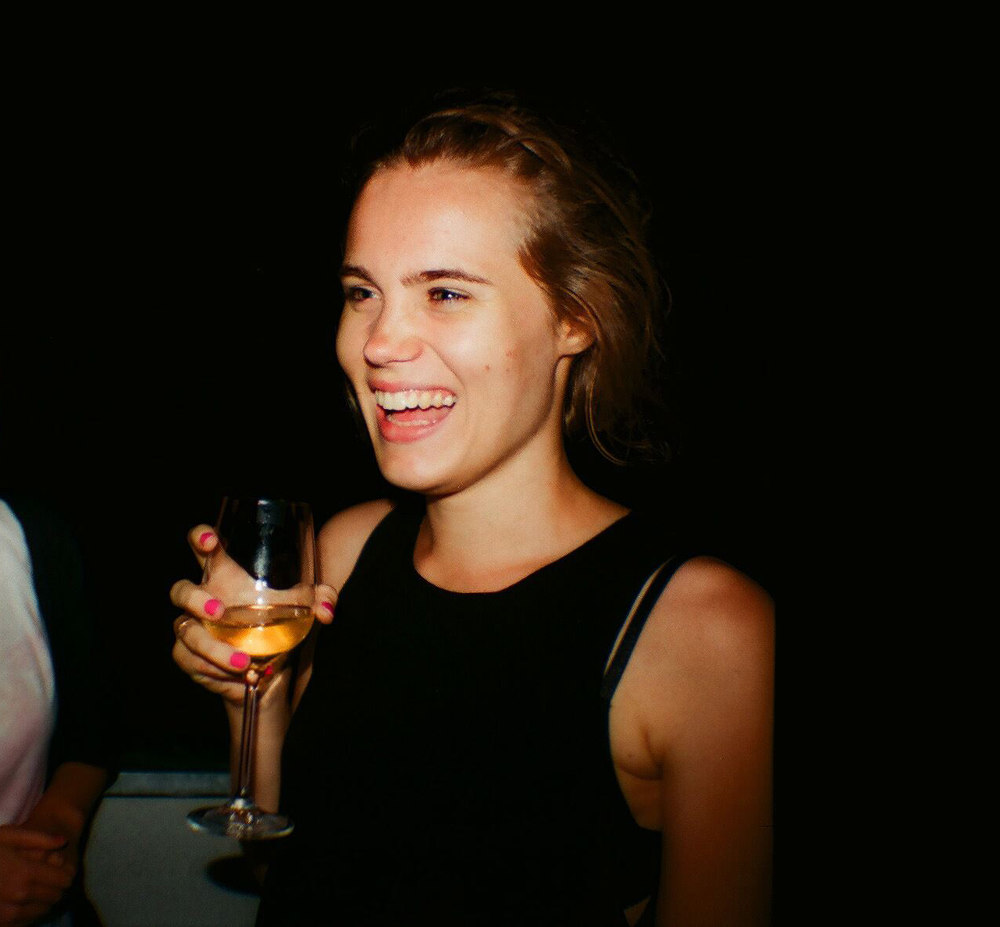

ABOUT
Im studing communication design in School of Form SWPS in Poznan. Im interested in creating process - i find research really important.
On every level of my design process I always ask very simple question “what for?” to avoid unnecessary stuff.
Im interested in commercial design and also personal projects.
On every level of my design process I always ask very simple question “what for?” to avoid unnecessary stuff.
Im interested in commercial design and also personal projects.

Short Waves Festival 2017: Film posters exhibition, group exhibition, June 2017
Tęczowy Manifest, group exhibition, Cafe Kulturalna, June 2017
Publication G'rls Room magazine, June 2017
Publication A5 Zine, May 2017
Noc z Designem, my video loop on Poznań Design Festival, Poznań 2017
Poznań Design Festival exhibition, Poznań 2017
Video and poster exhibition on Re#Media event with Europeana and School of Form in National Audiovisual Institute, Warsaw 2017
Exhibition “Expose myself” in Tłok, Gdynia 2016
Tęczowy Manifest, group exhibition, Cafe Kulturalna, June 2017
Publication G'rls Room magazine, June 2017
Publication A5 Zine, May 2017
Noc z Designem, my video loop on Poznań Design Festival, Poznań 2017
Poznań Design Festival exhibition, Poznań 2017
Video and poster exhibition on Re#Media event with Europeana and School of Form in National Audiovisual Institute, Warsaw 2017
Exhibition “Expose myself” in Tłok, Gdynia 2016